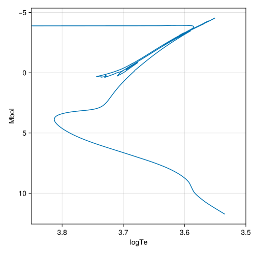
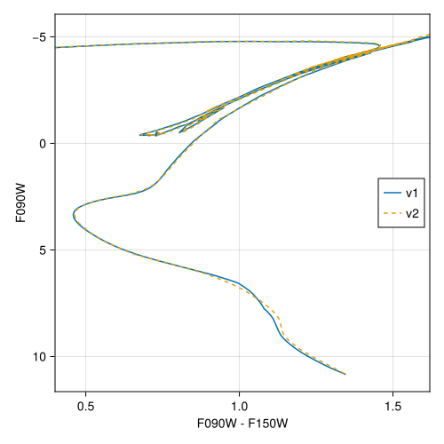

MIST v1.2
Here we describe the interface we provide to the MIST v1.2 library of stellar evolutionary tracks. See the MIST overview page for a comparison with MIST v2.5.
The main papers describing the MIST v1.2 models are Dotter [1] and Choi et al. [12]. The tracks include equivalent evolutionary points (EEPs) necessary to support robust isochrone creation and interpolation.
The MIST v1.2 library covers initial stellar masses from 0.1 to 300 solar masses and initial metallicities $-4 \le [\text{M}/\text{H}] \le 0.5$. It includes post-MS and post-RGB evolution (when appropriate), and provides both rotating (vvcrit=0.4) and non-rotating (vvcrit=0.0) models. All models assume scaled-solar chemical compositions using the solar abundances of Asplund et al. [15].
Data Acquisition
This package handles downloading and pre-processing of the MIST stellar tracks. The main access point we provide is MISTv1Library, which will load and make available the full library of stellar tracks. The first time you call this method, you will be prompted to download the required data files. The total data volume that will be downloaded is about 1.3 GB and will total ~158 MB after processing. Information on customizing the install location is available here. The data can be uninstalled by running using DataDeps; rm(datadep"MISTv1.2_vvcrit0.0"; recursive=true); rm(datadep"MISTv1.2_vvcrit0.4"; recursive=true). With all the tracks available, we are able to perform operations like interpolating isochrones at any age and metallicity within the MIST parameter space.
Table Details
The user guide for the MIST products is available here. The full MIST tracks contain 77 data columns originating from the MESA output. A description of the columns is available here. Currently, we process the raw tracks and only save the subset of columns given by StellarTracks.MIST.select_columns (see below). These columns are the ones most commonly needed for computing isochrones and applying bolometric corrections to compare against observed stellar populations. This choice is an optimization for storage space, load time, and development simplicity. If you require access to more columns, please submit an issue on the source repository and we can consider options.
using StellarTracks.MIST
MIST.select_columns # These columns are saved from raw tracks(:star_age, :log_L, :log_Teff, :log_g, :log_surf_cell_z)Examples
Load the full MIST v1.2 library of non-rotating models (vvcrit=0), which is downloaded via DataDeps.jl if not already available. MIST also provides rotating models with vvcrit=0.4 which can be loaded with MISTv1Library(0.4).
using StellarTracks.MIST
p = MISTv1Library(0.0)Structure of interpolants for the MIST library of stellar tracks with vvcrit=0.0. Valid range of metallicities is (-4.0, 0.5).Use the MISTv1Library to interpolate an isochrone at log10(age [yr]) = 10.05 and metallicity $[\text{M}/\text{H}] = -1.234$. The isochrone is returned as a NamedTuple.
iso = isochrone(p, 10.05, -1.234)(eep = [248, 249, 250, 251, 252, 253, 254, 255, 256, 257 … 1701, 1702, 1703, 1704, 1705, 1706, 1707, 1708, 1709, 1710], m_ini = [0.10079712429694755, 0.10380340783172089, 0.10702691976555309, 0.1102793894521747, 0.11352374431883666, 0.11700133034645566, 0.12068751704997978, 0.1244694757344623, 0.12824915158648736, 0.13219407504457625 … 0.8342740682406271, 0.8342756717870922, 0.834277326582477, 0.8342790397473947, 0.8342808170663409, 0.8342826535791322, 0.8342845511333908, 0.8342865119152536, 0.8342885565242094, 0.834290681374387], logTe = [3.534242088538083, 3.537063897991744, 3.540032757505747, 3.542962168951034, 3.5458102051000226, 3.5487711822542503, 3.5517976285645236, 3.554771129298593, 3.5575959849725365, 3.5603730719774376 … 4.727559017814379, 4.722819119084976, 4.718051762592433, 4.713260865511564, 4.708449800863322, 4.703620651072402, 4.698774586846384, 4.693912601409738, 4.689037062044907, 4.6841497036584], Mbol = [11.740362682959566, 11.653927541877959, 11.562954701272911, 11.473029866904211, 11.385334609306653, 11.293712136720663, 11.199364321190844, 11.105665416230584, 11.015400241322782, 10.925020446245568 … 3.6708192189159, 3.7296889795126553, 3.788855378716078, 3.8482166586717956, 3.9077025696421135, 3.967261194837998, 4.0268533995485765, 4.086451783198169, 4.146048351593282, 4.2056374483521015], logg = [5.333107191245767, 5.321806250232366, 5.309941059042711, 5.298236989985775, 5.28685327220641, 5.274996275046026, 5.262817243520637, 5.250744530645932, 5.239147806362178, 5.227577777051545 … 7.610366554652278, 7.615232328424034, 7.6200112092769325, 7.6247122213426275, 7.6293398513009985, 7.6338964596531085, 7.638367669252261, 7.642758344175105, 7.647075380646929, 7.651318616746972], logL = [-2.8001450731838267, -2.7655710167511836, -2.7291818805091648, -2.6932119467616844, -2.658133843722662, -2.6214848546882648, -2.583745728476337, -2.5462661664922335, -2.510160096529112, -2.474008178498227 … 0.42767231243364007, 0.4041244081949379, 0.3804578485135691, 0.35671333653128184, 0.33291897214315486, 0.30909552206480084, 0.2852586401805697, 0.26141928672073256, 0.23758065936268713, 0.21374502065915957], log_surf_cell_z = [-3.079098774870469, -3.079098774825342, -3.0790987746672696, -3.079098774398662, -3.0790987740117273, -3.0790987734600863, -3.0790987727022747, -3.07909877171888, -3.079098770519968, -3.0790987689893727 … -3.081446125806582, -3.081445959713452, -3.0814457883076964, -3.0814456108402233, -3.081445426711193, -3.081445236484578, -3.0814450399262716, -3.0814448368026683, -3.0814446249588388, -3.0814444048069656])The NamedTuple returned by isochrone can be converted to table types, like TypedTables.Table, to simplify further use.
using TypedTables: Table
Table(iso)Table with 7 columns and 1463 rows:
eep m_ini logTe Mbol logg logL log_surf_cell_z
┌────────────────────────────────────────────────────────────────────
1 │ 248 0.100797 3.53424 11.7404 5.33311 -2.80015 -3.0791
2 │ 249 0.103803 3.53706 11.6539 5.32181 -2.76557 -3.0791
3 │ 250 0.107027 3.54003 11.563 5.30994 -2.72918 -3.0791
4 │ 251 0.110279 3.54296 11.473 5.29824 -2.69321 -3.0791
5 │ 252 0.113524 3.54581 11.3853 5.28685 -2.65813 -3.0791
6 │ 253 0.117001 3.54877 11.2937 5.275 -2.62148 -3.0791
7 │ 254 0.120688 3.5518 11.1994 5.26282 -2.58375 -3.0791
8 │ 255 0.124469 3.55477 11.1057 5.25074 -2.54627 -3.0791
9 │ 256 0.128249 3.5576 11.0154 5.23915 -2.51016 -3.0791
10 │ 257 0.132194 3.56037 10.925 5.22758 -2.47401 -3.0791
11 │ 258 0.13653 3.56321 10.8302 5.21544 -2.43609 -3.0791
12 │ 259 0.140922 3.56583 10.7395 5.20383 -2.39978 -3.0791
13 │ 260 0.145329 3.56818 10.654 5.19292 -2.3656 -3.0791
14 │ 261 0.149827 3.57027 10.5728 5.18256 -2.33313 -3.0791
15 │ 262 0.156959 3.57317 10.4545 5.16755 -2.28579 -3.0791
16 │ 263 0.164065 3.57583 10.3449 5.15363 -2.24196 -3.0791
17 │ 264 0.171518 3.57833 10.2381 5.13997 -2.19925 -3.0791
⋮ │ ⋮ ⋮ ⋮ ⋮ ⋮ ⋮ ⋮The theoretical isochrone is plotted below.

We can load a grid of bolometric corrections from BolometricCorrections.jl to add observational magnitudes to the theoretical isochrone. BolometricCorrections.jl provides two versions of the MIST BC grid: v1.2 (metallicity and reddening only) and v2.5 (adds [α/Fe]). Here we use the MIST v1.2 grid to evaluate an isochrone with log10(age [yr]) = 10.05, $[\text{M}/\text{H}] = -1.234$, and $A_v=0.02$ mag.
using BolometricCorrections.MIST: MISTv1BCGrid
m1 = MISTv1BCGrid("JWST")
iso_v1 = isochrone(p, m1, 10.05, -1.234, 0.02)Table with 36 columns and 1463 rows:
eep m_ini logTe Mbol logg logL log_surf_cell_z ⋯
┌───────────────────────────────────────────────────────────────────────
1 │ 248 0.100797 3.53424 11.7404 5.33311 -2.80015 -3.0791 ⋯
2 │ 249 0.103803 3.53706 11.6539 5.32181 -2.76557 -3.0791 ⋯
3 │ 250 0.107027 3.54003 11.563 5.30994 -2.72918 -3.0791 ⋯
4 │ 251 0.110279 3.54296 11.473 5.29824 -2.69321 -3.0791 ⋯
5 │ 252 0.113524 3.54581 11.3853 5.28685 -2.65813 -3.0791 ⋯
6 │ 253 0.117001 3.54877 11.2937 5.275 -2.62148 -3.0791 ⋯
7 │ 254 0.120688 3.5518 11.1994 5.26282 -2.58375 -3.0791 ⋯
8 │ 255 0.124469 3.55477 11.1057 5.25074 -2.54627 -3.0791 ⋯
9 │ 256 0.128249 3.5576 11.0154 5.23915 -2.51016 -3.0791 ⋯
10 │ 257 0.132194 3.56037 10.925 5.22758 -2.47401 -3.0791 ⋯
11 │ 258 0.13653 3.56321 10.8302 5.21544 -2.43609 -3.0791 ⋯
12 │ 259 0.140922 3.56583 10.7395 5.20383 -2.39978 -3.0791 ⋯
13 │ 260 0.145329 3.56818 10.654 5.19292 -2.3656 -3.0791 ⋯
14 │ 261 0.149827 3.57027 10.5728 5.18256 -2.33313 -3.0791 ⋯
15 │ 262 0.156959 3.57317 10.4545 5.16755 -2.28579 -3.0791 ⋯
16 │ 263 0.164065 3.57583 10.3449 5.15363 -2.24196 -3.0791 ⋯
17 │ 264 0.171518 3.57833 10.2381 5.13997 -2.19925 -3.0791 ⋯
⋮ │ ⋮ ⋮ ⋮ ⋮ ⋮ ⋮ ⋮ ⋱All available columns in the isochrone can be obtained with TypedTables.columnnames.
using TypedTables: columnnames
columnnames(iso_v1)(:eep, :m_ini, :logTe, :Mbol, :logg, :logL, :log_surf_cell_z, :F070W, :F090W, :F115W, :F140M, :F150W2, :F150W, :F162M, :F164N, :F182M, :F187N, :F200W, :F210M, :F212N, :F250M, :F277W, :F300M, :F322W2, :F323N, :F335M, :F356W, :F360M, :F405N, :F410M, :F430M, :F444W, :F460M, :F466N, :F470N, :F480M)We can also use the MIST v2.5 BC grid. The isochrone method accepts a MISTv2BCGrid and converts metallicities between the chemical abundance scales of the stellar tracks and bolometric corrections automatically. The [α/Fe] value is inferred from the track library automatically.
using BolometricCorrections.MIST: MISTv2BCGrid
m2 = MISTv2BCGrid("JWST")
iso_v2 = isochrone(p, m2, 10.05, -1.234, 0.02) # [M/H], AvTable with 36 columns and 1463 rows:
eep m_ini logTe Mbol logg logL log_surf_cell_z ⋯
┌───────────────────────────────────────────────────────────────────────
1 │ 248 0.100797 3.53424 11.7404 5.33311 -2.80015 -3.0791 ⋯
2 │ 249 0.103803 3.53706 11.6539 5.32181 -2.76557 -3.0791 ⋯
3 │ 250 0.107027 3.54003 11.563 5.30994 -2.72918 -3.0791 ⋯
4 │ 251 0.110279 3.54296 11.473 5.29824 -2.69321 -3.0791 ⋯
5 │ 252 0.113524 3.54581 11.3853 5.28685 -2.65813 -3.0791 ⋯
6 │ 253 0.117001 3.54877 11.2937 5.275 -2.62148 -3.0791 ⋯
7 │ 254 0.120688 3.5518 11.1994 5.26282 -2.58375 -3.0791 ⋯
8 │ 255 0.124469 3.55477 11.1057 5.25074 -2.54627 -3.0791 ⋯
9 │ 256 0.128249 3.5576 11.0154 5.23915 -2.51016 -3.0791 ⋯
10 │ 257 0.132194 3.56037 10.925 5.22758 -2.47401 -3.0791 ⋯
11 │ 258 0.13653 3.56321 10.8302 5.21544 -2.43609 -3.0791 ⋯
12 │ 259 0.140922 3.56583 10.7395 5.20383 -2.39978 -3.0791 ⋯
13 │ 260 0.145329 3.56818 10.654 5.19292 -2.3656 -3.0791 ⋯
14 │ 261 0.149827 3.57027 10.5728 5.18256 -2.33313 -3.0791 ⋯
15 │ 262 0.156959 3.57317 10.4545 5.16755 -2.28579 -3.0791 ⋯
16 │ 263 0.164065 3.57583 10.3449 5.15363 -2.24196 -3.0791 ⋯
17 │ 264 0.171518 3.57833 10.2381 5.13997 -2.19925 -3.0791 ⋯
⋮ │ ⋮ ⋮ ⋮ ⋮ ⋮ ⋮ ⋮ ⋱A color-magnitude diagram comparing the two BC grids applied to an isochrone made from MIST v1.2 tracks is plotted below. The isochrone made with the v1.2 BCs is shown as a solid line and the isochrone made with the v2.5 BCs is shown as a dashed line.

Chemistry API
We re-export the BolometricCorrections.MIST.MISTv1Chemistry type defined in BolometricCorrections.jl that can be used to access information on the chemical mixture assumed for the MIST v1.2 models. All models have scaled-solar chemical compositions.
Library API
StellarTracks.MIST.MISTv1Library — Type
MISTv1Library(vvcrit::Number=0)MISTv1Library implements the AbstractTrackLibrary interface for the MIST stellar evolution library. Instances can be constructed by providing a supported vvcrit argument for the rotation parameter, which must be equal to either 0 (no rotation) or 0.4. We set vvcrit=0 by default. If you construct an instance as p = MISTv1Library(0.0), it is callable as p(mh::Number, M::Number) which returns an InterpolatedTrack that interpolates between tracks to a specific metallicity ([M/H]) and initial stellar mass (M).
This type also supports isochrone construction (see isochrone).
Examples
julia> p = MISTv1Library(0.0)
Structure of interpolants for the MIST library of stellar tracks with vvcrit=0.0. Valid range of metallicities is (-4.0, 0.5).
julia> isochrone(p, 10.05, -2) isa NamedTuple
true
julia> p(-2.05, 1.05)
InterpolatedTrack with M_ini=1.05, MH=-2.05, Z=0.000132797, Y=0.249199, X=0.750668.StellarTracks.isochrone — Method
isochrone(p::MISTv1Library, logAge::Number, mh::Number)Interpolates properties of the stellar tracks in the library at the requested logarithmic age (logAge = log10(age [yr])) and logarithmic metallicity [M/H] = mh. Returns a NamedTuple containing the properties listed below:
eep: Equivalent evolutionary pointsm_ini: Initial stellar masses, in units of solar masses.logTe: Base-10 logarithm of the effective temperature [K] of the stellar model.Mbol: Bolometric luminosity of the stellar model.logg: Surface gravity of the stellar model.log_surf_cell_z: Base-10 logarithm of the surface metal mass fraction (Z).
Track Set API
StellarTracks.MIST.MISTv1TrackSet — Type
MISTv1TrackSet(mh::Number, vvcrit::Number=0)MISTv1TrackSet implements the AbstractTrackSet interface for the MIST stellar evolution library.
julia> ts = StellarTracks.MIST.MISTv1TrackSet(0.0, 0.0)
MISTv1TrackSet with MH=0.0, vvcrit=0.0, Z=0.0142014, Y=0.270327, 1710 EEPs and 196 initial stellar mass points.
julia> ts(1.01) # Interpolate track at new initial mass
MISTv1Track with M_ini=1.01, MH=0.0, vvcrit=0.0, Z=0.0142014, Y=0.270327, X=0.715472.
julia> isochrone(ts, 10.0) isa NamedTuple # Interpolate isochrone at `log10(age [yr]) = 10`
trueIndividual Tracks API
StellarTracks.MIST.MISTv1Track — Type
MISTv1Track(mh::Number, mass::Number, vvcrit::Number=0)MISTv1Track implements the AbstractTrack interface for the MIST stellar evolution library.
julia> track = StellarTracks.MIST.MISTv1Track(-2, 0.15, 0.0)
MISTv1Track with M_ini=0.15, MH=-2.0, vvcrit=0.0, Z=0.000148992, Y=0.249224, X=0.750627.
julia> track(7.0) # interpolate track at log10(age [yr]) = 7
(log_L = -1.5293719450743, log_Teff = 3.587337261741102, log_g = 4.447603584617846, log_surf_cell_z = -3.8450984758441953)MIST v1.2 References
This page cites the following references:
- [1]
- [12]
- J. Choi, A. Dotter, C. Conroy, M. Cantiello, B. Paxton and B. D. Johnson. MESA ISOCHRONES AND STELLAR TRACKS (MIST). I. SOLAR-SCALED MODELS. ApJ 823, 102 (2016).
- [15]
- M. Asplund, N. Grevesse, A. J. Sauval and P. Scott. The Chemical Composition of the Sun. Annual Review of Astronomy and Astrophysics 47, 481–522 (2009).